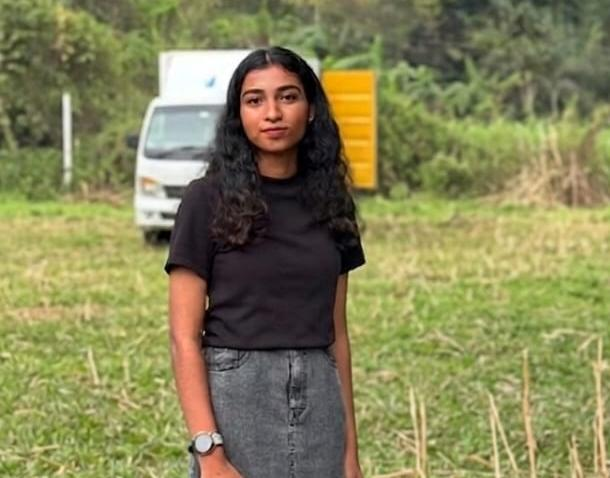

Enthusiastic and learning-driven BTech Artificial Intelligence & Data Science student with a solid foundation in software architectures, full-stack web workflows, and algorithmic systems. Hands-on experience designing modern interfaces alongside valuable industry exposure gained from a professional internship as a Python Developer. Proven ability to translate complex functional criteria into clean, scalable applications while maintaining rigorous documentation and project standards.
Python, C Programming, JavaScript
Django, Node.js, React, Flutter (Beginner)
Full-Stack Workflows, State Management, UI/UX Design Alignment, Algorithm Logic
Developing a cross-platform application tailored to connect university students and job seekers with direct, local part-time opportunities (hostels, commercial retail shops, etc.) using integrated frontend and backend systems.
Built an interactive online store layout simulating modern product catalogs, tracking state variables for shopping cart totals, and refining fluid layout boundaries.
Engineered a clean financial ledger layout utilizing functional JavaScript logic matrices to log transactions, compute live balance updates, and manage user expense inputs.
Created highly detailed web clones to master pixel-perfect typography alignment, responsive navigation sidebar parameters, and multi-element grid distributions.
Designed a responsive weather interface module tracking user location queries, displaying asynchronous updates, and managing input metrics via console states and clean visual fields.
Artificial Intelligence & Data Science
Currently Pursuing
Mentor Academy for Design Entrepreneurship Innovation and Technology
2024 – Present
Government HSS Mambaram (Kannur, Kerala)
Completed 2024